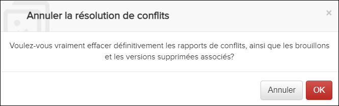
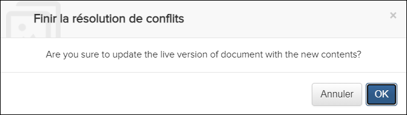

Non applicable pour Pinpoint Standalone Light.
Les utilisateurs doivent disposer des autorisations pour le privilège Peut fusionner de nouvelles révisions pour afficher un rapport de fusion et résoudre les conflits.
Après avoir ouvert un Report de Conflits, vous avez la
possibilité d'annuler ou de terminer la fusion.
Remarque : Pour terminer la fusion, tous
les conflits doivent d'abord être résolus. Faire référence à Résoudre les conflits de révision pour plus d'informations
sur la résolution des conflits.
Ouvrez le Report de Conflits et sélectionnez l'une de ces
options:
- Pour abandonner la fusion, cliquez sur le bouton .
Un message de confirmation apparaît:

Cliquez sur le bouton pour confirmer.
pour confirmer.
- Pour terminer la fusion, cliquez sur le bouton .Remarque : Cette option devient disponible lorsqu'il n'y a plus de documents avec des conflits restants dans le Report de Conflits.Un message de confirmation apparaît:

Cliquez sur le bouton pour terminer la
fusion.
pour terminer la
fusion.
Une fois la fusion terminée, la version d'aperçu (côté droit) de tous les documents du Report de Conflits devient la version en direct approuvée. Il s'agit de la version que les utilisateurs verront dans Pinpoint Viewer.